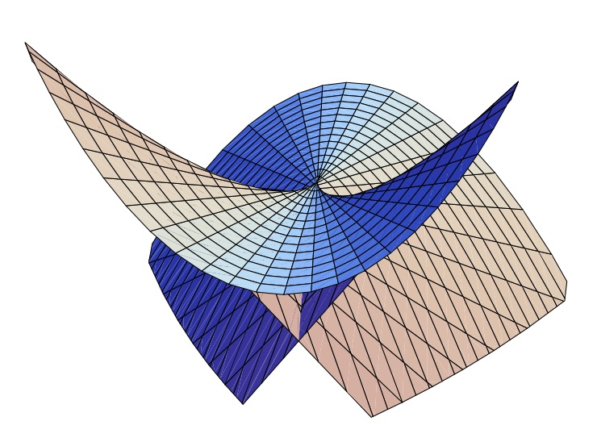

How to slow FastRationals
It is demonstrated that FastRationals are designed for use with rational values where both numerator and denominator are of relatively small magnitude. We find that their performance strengthens with additional use and more terms .. right up to reaching the critical region of a swallow tail where the magnitudes engender unreduced overflow too often.
| Swallow Tail |
|---|
|  |
| this image appears courtesy of Goo Ishikawa |
what is demonstrated
The sequences and indicies appearing in this section were obtained by running the source text that follows.
FastRational{Int32}most outperformsRational{Int32}at index 6 (10x).- this is the largest index for which
mayoverflow(_,_) == false.
- this is the largest index for which
!mayoverflow(sum(fastq32_seqs[5]), fastq32_seqs[6][end]) &&
mayoverflow(sum(fastq32_seqs[6]), fastq32_seqs[7][end]) === trueFastRational{Int64}most outperformsRational{Int64}at index 8 (12x).- this is the largest index for which
mayoverflow(_,_) == false.
- this is the largest index for which
!mayoverflow(sum(fastq64_seqs[5]), fastq64_seqs[6][end]) &&
mayoverflow(sum(fastq64_seqs[6]), fastq64_seqs[7][end]) === truedemonstration
using FastRationals, BenchmarkTools, MacroTools, Plots
BenchmarkTools.DEFAULT_PARAMETERS.evals = 1;
BenchmarkTools.DEFAULT_PARAMETERS.overhead = BenchmarkTools.estimate_overhead();
BenchmarkTools.DEFAULT_PARAMETERS.time_tolerance = 2.0e-6;
BenchmarkTools.DEFAULT_PARAMETERS.samples = 200;
BenchmarkTools.DEFAULT_PARAMETERS.seconds = 3;
walk(x, inner, outer) = outer(x)
walk(x::Expr, inner, outer) = outer(Expr(x.head, map(inner, x.args)...))
postwalk(f, x) = walk(x, x -> postwalk(f, x), f)
function referred(expr::Expr)
if expr.head == :$
:($(Expr(:$, :(Ref($(expr.args...)))))[])
else
expr
end
end
referred(x) = x
macro noelide(expr)
out = postwalk(referred, expr) |> esc
end
# using the Int64 Rational types
nterms = 20; # first 2 terms are (1//1), add one at the end
rational_terms = [1//factorial(i) for i=1:nterms];
fastq64_terms = FastRational{Int64}.(rational_terms);
# we want successively longer sequences so we can chart computational behavior
rational_seqs = [];
fastq64_seqs = [];
for i in 1:nterms
global rational_terms, fastq64terms, rational_seqs, fastq64_seqs
push!(rational_seqs, rational_terms[1:i])
push!(fastq64_seqs, fastq64_terms[1:i])
end;
# we time the summations so we can chart relative performance
rational_times = [];
fastq64_times = [];
for i in 1:nterms
global rational_seqs, fastq64_seqs, rational_times, fastq64_times
rseq = rational_seqs[i]
fseq = fastq64_seqs[i]
rationaltime = @noelide @belapsed sum($rseq)
fastq64time = @noelide @belapsed sum($fseq)
push!(rational_times, rationaltime)
push!(fastq64_times, fastq64time)
end;
rational_to_fast64 = Float32.(rational_times ./ fastq64_times);
# using the Int32 Rational types
nterms = 12; # first 2 terms are (1//1), add one at the end
rational_terms = Rational{Int32}.([1//factorial(i) for i=1:nterms]);
fastq32_terms = FastRational{Int32}.(rational_terms);
# we want successively longer sequences so we can chart computational behavior
rational_seqs = [];
fastq32_seqs = [];
for i in 1:nterms
global rational_terms, fastq32_terms, rational_seqs, fastq32_seqs
push!(rational_seqs, rational_terms[1:i])
push!(fastq32_seqs, fastq32_terms[1:i])
end;
# we time the summations so we can chart relative performance
rational_times = [];
fastq32_times = [];
for i in 1:nterms
global rational_seqs, fastq32_seqs, rational_times, fastq32_times
rseq = rational_seqs[i]
fseq = fastq32_seqs[i]
rationaltime = @noelide @belapsed sum($rseq)
fastq32time = @noelide @belapsed sum($fseq)
push!(rational_times, rationaltime)
push!(fastq32_times, fastq32time)
end;
rational_to_fast32 = Float32.(rational_times ./ fastq32_times);
# isolate each maximum
len64 = length(rational_to_fast64);
len32 = length(rational_to_fast32);
idxofmax_fastq64 = (1:len64)[maximum(rational_to_fast64) .== rational_to_fast64];
idxofmax_fastq32 = (1:len32)[maximum(rational_to_fast32) .== rational_to_fast32];
# plot
plot(rational_to_fast64, size=(600,600))
plot(rational_to_fast32, size=(600,600))
# also use log plots
log_rational_to_fast64 = log.(rational_to_fast64);
log_rational_to_fast32 = [log.(rational_to_fast32)..., log_rational_to_fast64[(end-(len64-len32)+1):end]...,];
plot(log_rational_to_fast64, size=(600,600))
plot!(log_rational_to_fast32)
println("\nThe maximum relative advantage of FastQ32 occured at index $idxofmax_fastq32\n")
println("\nThe maximum relative advantage of FastQ64 occured at index $idxofmax_fastq64\n")